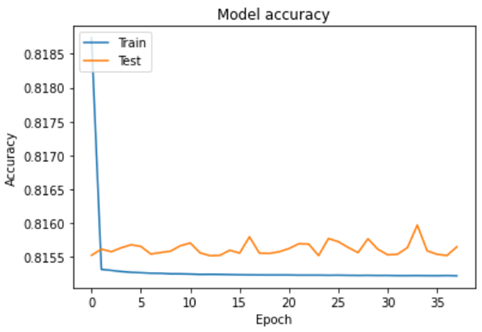

Gathering temperature data
We retrieved Reynolds optimally interpolated sea surface temperature (OISST) data corresponding to the Mexican Pacific (Figure S1), including the Gulf of California (Figure S2). The OISST product is a global 0.25x0.25 degree gridded dataset of Advanced Very High-Resolution Radiometer (AVHRR) derived sea surface temperatures at a daily resolution, from 1982 to 2020. Further in the text, we refer to OISST data as simply SST. The source data is currently available at: https://www.ncdc.noaa.gov/oisst. The code was written in R studio IDE (v.1.4.1717) working on R v.4.1.2.
Marine Heatwaves events
To detect marine heatwaves events, we calculated our climatological period (the statistical properties of the time series, including the mean, variance, seasonal cycle, and quantiles) over the whole time series. We then detected marine heatwaves from SST daily data within each 0.25-degree grid (i.e., each pixel). Since the analysis is pixel-based, it is independent of the size of the region bounding box selected, which is reported in Figure S1. The number and duration of marine heatwaves were calculated as periods of five or more consecutive days when daily SST was greater than the 90th percentile of our climatological threshold based on our time series ( Hobday et al. (2016) ). After detecting the events, we fit a generalized linear model (GLM) with a Poisson distribution to each pixel to calculate rates of change in marine heatwaves frequency. The marine heatwaves analysis was completed using the R package heatwaveR ( Schlegel and Smit (2018) ).
Temperature space-time models
After the larger scale analyses, we modeled temperature changes over space and time. To achieve this, we modeled the SST data using Generalized Additive Models (GAMs). To allow for interaction between Year and Latitude, we fit the following model: \(y = β0 + f(𝑥1, 𝑥2) + 𝜀, 𝜀 ~N(0, 𝜎2Λ)\)
where β0 is the intercept and f(𝑥1, 𝑥2) represents the smooth interaction of Year and Latitude. We used a tensor product for the smooth interaction which is especially useful for representing functions of covariates measured in different units. This spline interaction also has another advantage: in a classic time plus space model the terms are purely additives, thus no matter the degree of latitude we are predicting, the latitudinal effect for that particular degree will always be the same for all the time series. Whereas, if we use this type of spline interaction model, we can relax this additivity assumption and fit a model that allows the latitudinal part of the model to change in time along with the trend. Finally, to account for autocorrelation, we used an ARMA correlation structure. The best autocorrelation structure was chosen based on the AIC value and the results of a generalized likelihood ratio test ( Simon N. Wood (2017) ).
We used a similar approach for our analysis of the seasonal effects (Month) to know how much the temperature changed on a month-to-month basis over the years. In this analysis, we wanted to model any variation in, or interaction between, the trend and seasonal features of the data. We used the same formula (1) as for the space-time model but this time we modeled Year and Month as covariates. For the Month term, we used a cyclic cubic spline, as there should be no discontinuity between January and December. However, since we will be using monthly averaged data, to avoid jumps in SST values that can be quite different (e.g., December 1st vs January 1st) we created smooth boundary knots such that the distance between December and January is the same as the distance between any other month. In practice, we achieved this by using knots at 0.5 and 12.5 and creating a sequence spreading evenly between 1 and 12.
As a statistical protocol for our GAM analysis, we followed commonly applied methods to check the validity of the model fit as well as autocorrelation problems ( Zuur and Ieno (2016); Simon N. Wood (2017) ). We used the mgcv R package ( S. N. Wood (2011) ) for all the GAM analyses in this project.
Machine Learning model
We used a deep learning approach to forecast the future spatial suitability of fishing activity according to climate change scenarios.
Data used to predict spatial suitability was Sea Surface Temperature, Dissolved Oxygen Concentration, pH, and Primary Organic Production by all types of phytoplankton. All data are monthly records from 1850 to 2100 over a 0.5-degree pixel resolution. We used only data from 2008 to match VMS data timescale.
Data within each pixel are standardized and divided into 80% training and 20% test datasets.
The model is an artificial neural network with an activation function softmax and an entry shape of (1,5,1) dimensions. There is also a hidden layer of 50 neurons, a linearly activated function wholly connected. We apply a dropout filter of 0.2. The exit layer is of one neuron and a linear function.
The model was compiled using the MSE as an optimization index, an optimization algorithm of RMSPROP, and a Poisson metric optimization.
| Layer (type) | Output Shape | Param # |
|---|---|---|
| dense_15 | None, 1, 10 | 60 |
| dense_16 | None, 1, 50 | 550 |
| dense_17 | None, 1, 1 | 51 |
For the training parameters, we used epochs = 250 and batch = 1000.
The model accuracy scored 0.81.

The training stopped after 25 iterations when a local solution with an optimization value of MSE = 0.00354 and a Poisson loss = 0.815 was found.
The code to reproduce the ML model is available here, which was run on a SageMaker studio environment.